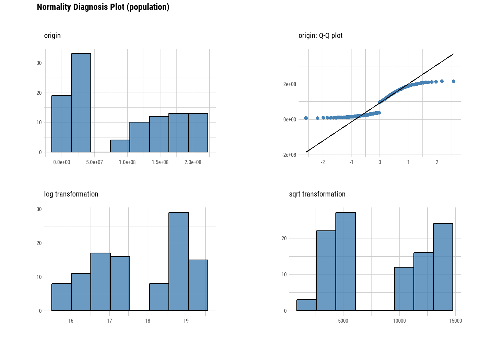
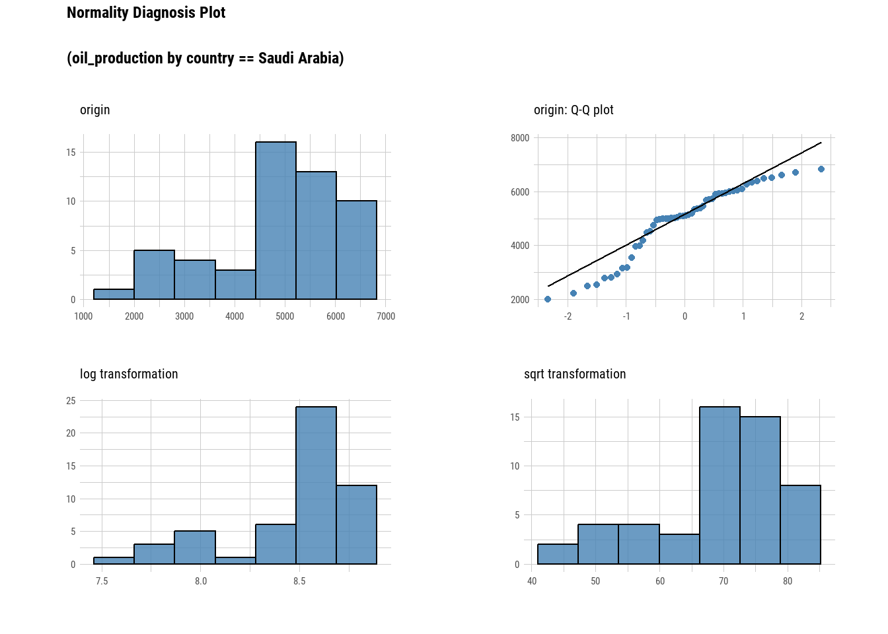

# Sets the number of significant figures to two - e.g., 0.01
options(digits = 2)
# Required package for quick package downloading and loading
if (!require(pacman))
install.packages("pacman")Loading required package: pacman# Downloads and load required packages
pacman::p_load(dlookr, # Exploratory data analysis
forecast, # Needed for Box-Cox transformations
formattable, # HTML tables from R outputs
here, # Standardizes paths to data
kableExtra, # Alternative to formattable
knitr, # Needed to write HTML reports
missRanger, # To generate NAs
tidyverse) # Powerful data wrangling package suite
# Let's load a data set from the diabetes data set
# An easy way
#dataset <- read.csv('https://raw.githubusercontent.com/rfordatascience/tidytuesday/master/data/2023/2023-07-25/scurvy.csv')
dataset <- read_csv(here('owid-energy.csv'))Rows: 21890 Columns: 129── Column specification ────────────────────────────────────────────────────────
Delimiter: ","
chr (2): country, iso_code
dbl (127): year, population, gdp, biofuel_cons_change_pct, biofuel_cons_chan...
ℹ Use `spec()` to retrieve the full column specification for this data.
ℹ Specify the column types or set `show_col_types = FALSE` to quiet this message.#dataset
#brazil_dataset <- dataset %>%
# filter(country == "Brazil")
#brazil_dataset
saudi_and_brazil <- dataset %>%
# filter(country %in% c("Brazil", "saudia arabia", "Panama")) %>%
# filter(country == "Brazil & Saudia Arabia" & year >= 1950)
# filter(iso_code %in% c("SAU")) %>%
filter(iso_code %in% c("BRA")) %>%
# filter(iso_code %in% c("SAU", "BRA")) %>%
# filter(year >= 1950) %>%
select(country, iso_code, year, gdp, population, gas_production, oil_production)
saudi_and_brazil# A tibble: 122 × 7
country iso_code year gdp population gas_production oil_production
<chr> <chr> <dbl> <dbl> <dbl> <dbl> <dbl>
1 Brazil BRA 1900 15718016000 18063384 0 0
2 Brazil BRA 1901 17288480768 18469004 0 0
3 Brazil BRA 1902 17298221056 18874521 0 0
4 Brazil BRA 1903 17645600768 19279718 0 0
5 Brazil BRA 1904 17980866560 19693613 0 0
6 Brazil BRA 1905 18502774784 20116394 0 0
7 Brazil BRA 1906 20284010496 20548251 0 0
8 Brazil BRA 1907 20275920896 20989379 0 0
9 Brazil BRA 1908 20131334144 21439977 0 0
10 Brazil BRA 1909 21732245504 21899583 0 0
# ℹ 112 more rows#dataset <- read_csv(here('daily_summary.csv'))
# dataset <- read_csv(here('population.csv'))
# source: https://github.com/rfordatascience/tidytuesday/tree/master/data/2023/2023-08-22 ###
saudi_and_brazil |>
head() |>
formattable()| country | iso_code | year | gdp | population | gas_production | oil_production |
|---|---|---|---|---|---|---|
| Brazil | BRA | 1900 | 1.6e+10 | 1.8e+07 | 0 | 0 |
| Brazil | BRA | 1901 | 1.7e+10 | 1.8e+07 | 0 | 0 |
| Brazil | BRA | 1902 | 1.7e+10 | 1.9e+07 | 0 | 0 |
| Brazil | BRA | 1903 | 1.8e+10 | 1.9e+07 | 0 | 0 |
| Brazil | BRA | 1904 | 1.8e+10 | 2.0e+07 | 0 | 0 |
| Brazil | BRA | 1905 | 1.9e+10 | 2.0e+07 | 0 | 0 |
saudi_and_brazil |>
select(country) |>
formattable()| country |
|---|
| Brazil |
| Brazil |
| Brazil |
| Brazil |
| Brazil |
| Brazil |
| Brazil |
| Brazil |
| Brazil |
| Brazil |
| Brazil |
| Brazil |
| Brazil |
| Brazil |
| Brazil |
| Brazil |
| Brazil |
| Brazil |
| Brazil |
| Brazil |
| Brazil |
| Brazil |
| Brazil |
| Brazil |
| Brazil |
| Brazil |
| Brazil |
| Brazil |
| Brazil |
| Brazil |
| Brazil |
| Brazil |
| Brazil |
| Brazil |
| Brazil |
| Brazil |
| Brazil |
| Brazil |
| Brazil |
| Brazil |
| Brazil |
| Brazil |
| Brazil |
| Brazil |
| Brazil |
| Brazil |
| Brazil |
| Brazil |
| Brazil |
| Brazil |
| Brazil |
| Brazil |
| Brazil |
| Brazil |
| Brazil |
| Brazil |
| Brazil |
| Brazil |
| Brazil |
| Brazil |
| Brazil |
| Brazil |
| Brazil |
| Brazil |
| Brazil |
| Brazil |
| Brazil |
| Brazil |
| Brazil |
| Brazil |
| Brazil |
| Brazil |
| Brazil |
| Brazil |
| Brazil |
| Brazil |
| Brazil |
| Brazil |
| Brazil |
| Brazil |
| Brazil |
| Brazil |
| Brazil |
| Brazil |
| Brazil |
| Brazil |
| Brazil |
| Brazil |
| Brazil |
| Brazil |
| Brazil |
| Brazil |
| Brazil |
| Brazil |
| Brazil |
| Brazil |
| Brazil |
| Brazil |
| Brazil |
| Brazil |
| Brazil |
| Brazil |
| Brazil |
| Brazil |
| Brazil |
| Brazil |
| Brazil |
| Brazil |
| Brazil |
| Brazil |
| Brazil |
| Brazil |
| Brazil |
| Brazil |
| Brazil |
| Brazil |
| Brazil |
| Brazil |
| Brazil |
| Brazil |
| Brazil |
| Brazil |
saudi_and_brazil |>
plot_normality()


saudi_and_brazil %>%
group_by(country) %>%
select(population) %>%
plot_normality()Adding missing grouping variables: `country`
saudi_and_brazil |>
select(oil_production, gas_production) |>
describe() |>
select(described_variables, mean, IQR, skewness) |>
formattable()| described_variables | mean | IQR | skewness |
|---|---|---|---|
| oil_production | 310 | 396 | 1.7 |
| gas_production | 38 | 34 | 2.1 |
# Gas production is skewed more to the right (1.78)
# than oil production (0.75).
saudi_and_brazil |>
plot_normality(oil_production, gas_production)
# This is good if I can create two datasets for Brazil and S.A. and
# run them seperately and then quickly look at visual representations
# for GDP, oil and gas production, etc., then quickly make a comparison
# between the two countries then go further in-depth and perform
# additional analysis.
saudi_and_brazil %>%
# This "group_by" function below works better for me!!!
# So, group_by is meant more so for ordinaldata, which the only
# piece of ordinal data I have is for "iso_code." But it would be better
# for me to use the "group_by" because I can simply up Brazil & S.A.
# without having to create two separate datasets and then run
# plot_normality.
group_by(iso_code) %>%
select(oil_production, gas_production) %>%
plot_normality()Adding missing grouping variables: `iso_code`
filtered_column <- saudi_and_brazil |>
filter(oil_production > 0)
filtered_column# A tibble: 80 × 7
country iso_code year gdp population gas_production oil_production
<chr> <chr> <dbl> <dbl> <dbl> <dbl> <dbl>
1 Brazil BRA 1942 68221296640 43672675 0 0.047
2 Brazil BRA 1943 77735960576 44833224 0 0.07
3 Brazil BRA 1944 80576684032 46024612 0 0.093
4 Brazil BRA 1945 82817277952 47247661 0 0.116
5 Brazil BRA 1946 91503345664 48503211 0.104 0.105
6 Brazil BRA 1947 94744731648 49792125 0.012 0.151
7 Brazil BRA 1948 103941000000 51115291 0.035 0.221
8 Brazil BRA 1949 111895000000 52508525 0.058 0.163
9 Brazil BRA 1950 119499000000 53955360 0.058 0.512
10 Brazil BRA 1951 125335000000 55591060 0.093 1.05
# ℹ 70 more rows# This is a quick way to just filtered all the data based on one column,
# in this case, oil_prodution, which I'm telling R to show me all data
# > 0 for oil_production, which begins in 1942 for Brazil and 1936 for
# S.A., which makes me wonder if WWII had anything to do with Brazil
# beginning its production of oil and if so, who was Brazil supplying
# oil to?
######################################################################
# The next EDA exercises will have us look at:
# sqrt
# log+1
# 1/x (inverse)
# x^2
# x^3
# I'm re-adding the function for saudi_and_brazil so that I can toggle
# between displaying data for SAU and BRA.
saudi_and_brazil <- dataset %>%
filter(iso_code %in% c("SAU"))
saudi_and_brazil# A tibble: 122 × 129
country year iso_code population gdp biofuel_cons_change_pct
<chr> <dbl> <chr> <dbl> <dbl> <dbl>
1 Saudi Arabia 1900 SAU 2138769 NA NA
2 Saudi Arabia 1901 SAU 2142066 NA NA
3 Saudi Arabia 1902 SAU 2147298 NA NA
4 Saudi Arabia 1903 SAU 2154462 NA NA
5 Saudi Arabia 1904 SAU 2161623 NA NA
6 Saudi Arabia 1905 SAU 2168782 NA NA
7 Saudi Arabia 1906 SAU 2175938 NA NA
8 Saudi Arabia 1907 SAU 2183091 NA NA
9 Saudi Arabia 1908 SAU 2190240 NA NA
10 Saudi Arabia 1909 SAU 2198435 NA NA
# ℹ 112 more rows
# ℹ 123 more variables: biofuel_cons_change_twh <dbl>,
# biofuel_cons_per_capita <dbl>, biofuel_consumption <dbl>,
# biofuel_elec_per_capita <dbl>, biofuel_electricity <dbl>,
# biofuel_share_elec <dbl>, biofuel_share_energy <dbl>,
# carbon_intensity_elec <dbl>, coal_cons_change_pct <dbl>,
# coal_cons_change_twh <dbl>, coal_cons_per_capita <dbl>, …sqrt_prod_data <- transform(saudi_and_brazil$oil_production, method = "sqrt")
# sqrtIns <- transform(saudi_and_brazil$gas_production, method = "sqrt")
summary(sqrt_prod_data)* Resolving Skewness with sqrt
* Information of Transformation (before vs after)
Original Transformation
n 122.000 122.00
na 0.000 0.00
mean 2265.775 35.11
sd 2496.068 32.28
se_mean 225.983 2.92
IQR 5010.889 70.79
skewness 0.522 0.16
kurtosis -1.458 -1.70
p00 0.000 0.00
p01 0.000 0.00
p05 0.000 0.00
p10 0.000 0.00
p20 0.000 0.00
p25 0.000 0.00
p30 0.044 0.20
p40 241.234 15.51
p50 802.243 28.31
p60 2522.144 50.22
p70 4686.705 68.46
p75 5010.889 70.79
p80 5133.081 71.65
p90 5930.801 77.01
p95 6321.522 79.51
p99 6686.937 81.77
p100 6823.463 82.60sqrt_prod_data |>
plot()
Log1_prod_data <- transform(saudi_and_brazil$oil_production, method = "log+1")
summary(Log1_prod_data)* Resolving Skewness with log+1
* Information of Transformation (before vs after)
Original Transformation
n 122.000 122.000
na 0.000 0.000
mean 2265.775 5.013
sd 2496.068 3.759
se_mean 225.983 0.340
IQR 5010.889 8.520
skewness 0.522 -0.427
kurtosis -1.458 -1.654
p00 0.000 0.000
p01 0.000 0.000
p05 0.000 0.000
p10 0.000 0.000
p20 0.000 0.000
p25 0.000 0.000
p30 0.044 0.043
p40 241.234 5.485
p50 802.243 6.687
p60 2522.144 7.833
p70 4686.705 8.452
p75 5010.889 8.520
p80 5133.081 8.544
p90 5930.801 8.688
p95 6321.522 8.752
p99 6686.937 8.808
p100 6823.463 8.828